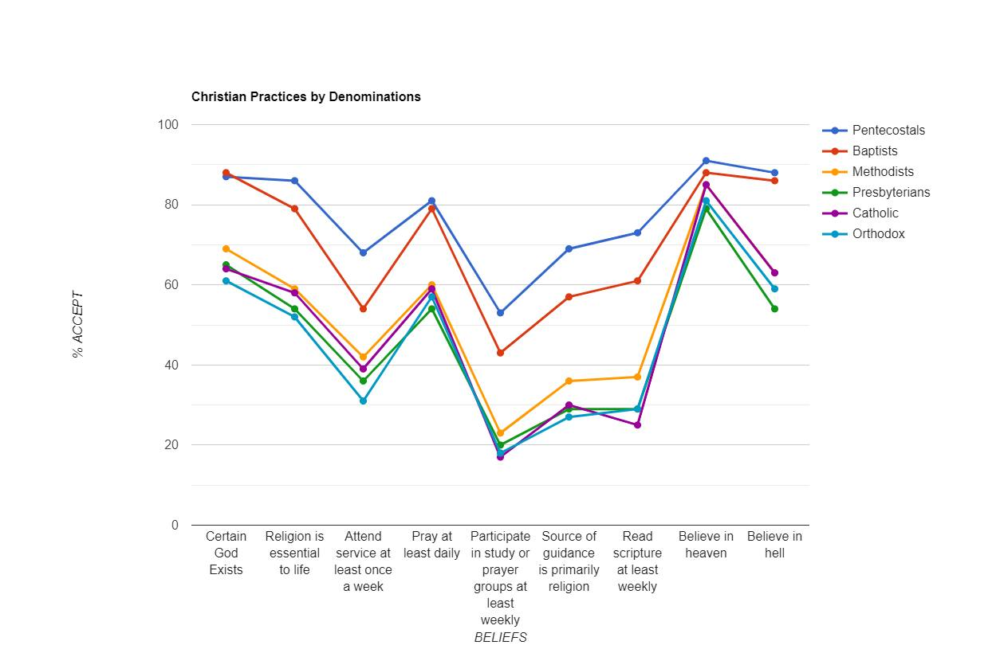
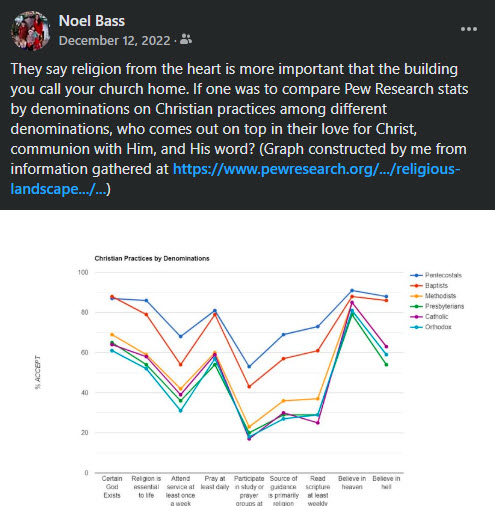

Reflections on the 2014 Pew Research Study
Two years ago, I posted this interesting graph after digging through the Religious Landscape Report which pulled from census data in 2014.

In the last 10 years, quite a few things have changed, and while we don't have the data to show objectively, here are a few things I've noticed.
1. The survey accepted "cultural christians" as legitimate authorities for their tradition. This can severely skew results as individuals who identify as "Catholic" simply because their grandma was Catholic were qualified for this survey.
2. The study was taken before the advent of woke ideology, and many of the newer traditions have been affected significantly.
3. The sample sizes were pulled from 35000 individuals, but some groups that represent a much higher population made up a significantly smaller section of the survey (ie E. Orthodox had less than 200 representatives).
The initial comments from 2 years ago on this post saw a correlation between 'tradition longevity' and 'ecclesiastical rules'. In other words, they correlated that as traditional regulations in relation to worship increase, corruption also increases. I think this is a fault considering point #1 as well as considering how long each tradition has existed (ie Orthodoxy/Catholicism 2000 years vs Methodism 300 years. Trend towards corruption from a denominations asserted founding principles is significantly worse within Protestant denominations as a whole on a normalized timeline).
I suspect that, assuming the qualifying standards do not change for the next report, we will see Pentecostalism/ Non-denomination churches remain on top, those under the Baptists umbrella will begin to cave gradually (my prediction come from their recent council to debate on whether to remain tethered to the Nicene Creed as a foundational Christian standard), older protestant traditions will begin to cliff dive, and Catholicism will continue to decline as they have taken to the woke disease. I actually think Orthodoxy has been a rising star in the last 10 years as they have taken a strong stance on catechisms in the US, have no interest in changing their tradition to adopt a woke ideology as a whole, and have received quite a bit of 'marketing', if you will, from high profile celebrities, especially after Covid. Newer branches that have broken off of dying traditions because of doctrinal perversions and laxity will, of course, see quite a bit of growth.
If I could take away one warning as a whole from these results, it would be that without a solid tradition/normative interpretational authority, every denomination is inevitably subject to change and corruption overtime.
**This information was pulled together from Pew Research - Religious Landscape Study 2014